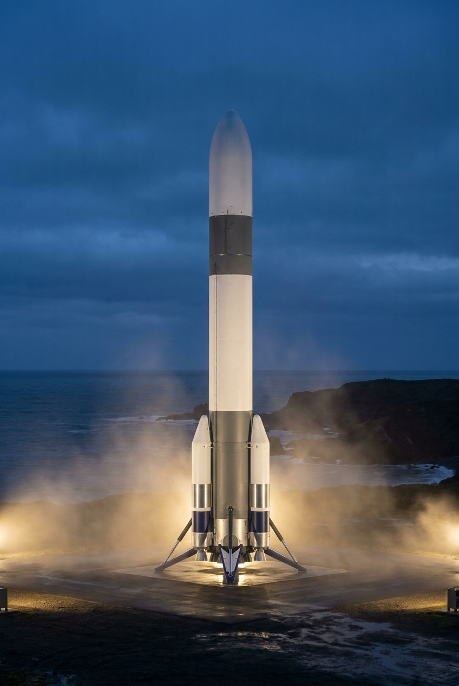

Low Earth Orbit
Reliable, responsive access for science, communications and orbital infrastructure.
400 KMEARTH ORBIT
The next chapter of human flight
We build the systems that will carry humanity from a single-planet species to a civilization among the stars.
Astra Horizon is creating an integrated spaceflight architecture: reusable launch vehicles, autonomous orbital infrastructure and habitats designed for life beyond Earth.
Discover our architecture →One system. Four horizons. Each mission expands the reach of the next.
Reliable, responsive access for science, communications and orbital infrastructure.
Cargo and crew systems supporting a permanent human presence on the Moon.
Heavy transport and closed-loop habitats for the first sustained Mars missions.
Advanced propulsion and autonomous systems for destinations beyond Mars.

Flight proven · Fully reusable
Built to fly, land and fly again. Aurelia Heavy pairs 32 methane engines with an autonomous recovery system to deliver exceptional mass to orbit with dramatically less waste.
Every component is designed as part of one intelligent, resilient ecosystem.
Autonomous flight intelligence that learns from every mission and adapts in real time.
Precision recovery and rapid refurbishment make spaceflight repeatable.
Modular, self-sustaining environments designed around human wellbeing.
Secure high-bandwidth communications across the Earth–Moon system.
Our global mission network connects launch sites, tracking stations and vehicles in a single real-time system.
“Astra Horizon is not merely building vehicles. They are building the connective tissue of a spacefaring civilization.
AH–07 Lunar Pathfinder is targeted for September 18, 2026, subject to range and weather conditions.
Aurelia's booster and upper stage are designed for autonomous recovery and rapid reuse.
Our rideshare program supports payloads from 5 kg to dedicated heavy-lift missions.
The horizon is calling
Join the engineers, explorers and dreamers turning the impossible into infrastructure.